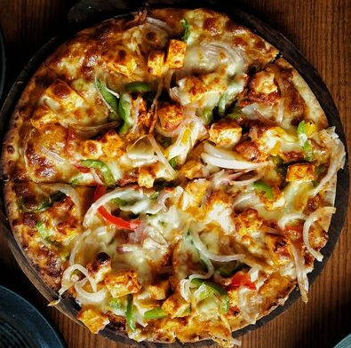

Restaurant-Style Spicy Paneer Tikka Pizza

Description
Spicy Paneer Tikka Pizza is the ultimate fusion masterpiece, marrying the
bold, smoky flavors of North Indian tandoori paneer tikka with the
comforting texture of an Italian artisanal pizza.
Originating from modern
Indian cafes and popular urban food hubs, this dish bridges two distinct
culinary worlds by replacing traditional pizza sauce with a spiced makhani
or tikka base, layered with marinated grilled paneer, and finished with
fresh herbs and a fusion drizzle. It delivers a perfect balance of smoky, spicy, creamy, and cheesy notes in every single bite.
Ingredients
Pizza Base & Cheese:
- 1 large (10 to 12-inch) pre-baked pizza crust or
fresh raw pizza dough ball
- 1.5 cups low-moisture part-skim mozzarella cheese, freshly shredded
- 1 tbsp melted butter or garlic butter (for brushing the crust edges)
Paneer Tikka Marinade & Toppings:
- 250 grams firm paneer, cut into neat 3/4-inch bite-sized cubes
- 1/4 cup thick hung curd or Greek yogurt
- 1 tbsp ginger-garlic paste
- 1 tsp Kashmiri red chili powder (for vibrant natural color and mild heat)
- 1/2 tsp Garam masala powder
- 1/2 tsp roasted cumin powder (jeera)
- 1 tsp mustard oil or neutral cooking oil
- 1 tbsp fresh lemon juice
- Salt to taste (approx. 1/2 tsp)
Pizza Sauce & Veggie Toppings:
- 1/3 cup rich tomato-makhani sauce or spicy pizza-tikka sauce
- 1/2 medium red onion, sliced into thin half-moons
- 1/2 medium green bell pepper (capsicum), sliced into thin strips
- 1 small tomato, seeded and diced small (optional)
Garnish:
- 1 tbsp fresh cilantro (coriander) leaves, finely chopped
- 1 tsp chaat masala (sprinkled right after baking)
- 2 tbsp mint yogurt chutney or mint mayo (for the final drizzle)
Steps
- Marinate the Paneer: In a mixing bowl, combine the hung curd, ginger-garlic paste, Kashmiri red chili powder, garam masala, roasted cumin powder, lemon juice, mustard oil, and salt. Whisk until smooth. Gently fold in the paneer cubes until fully coated. Cover and let marinate in the refrigerator for at least 20 to 30 minutes.
- Char the Paneer Tikka: Heat a heavy-bottomed grill pan or skillet over medium-high heat with 1 teaspoon of oil. Place the marinated paneer cubes on the pan in a single layer. Sear for 2 to 3 minutes on each side until charred spots appear on the edges. Remove from heat and set aside.
- Preheat the Oven: Preheat your oven to its highest temperature setting (around 250°C / 480°F). If you are using a pizza stone, place it inside the oven while preheating.
- Assemble the Pizza:
- Roll out or place your pizza dough/crust on a piece of parchment paper or a floured pizza peel.
- Evenly spread the tomato-makhani/tikka sauce over the base, leaving a small border around the edges for the crust.
- Sprinkle half of the shredded mozzarella cheese over the sauce.
- Artfully arrange the charred paneer tikka cubes, sliced red onions, and bell pepper strips across the surface.
- Top with the remaining shredded mozzarella cheese.
- Bake: Transfer the pizza to the preheated oven or pizza stone. Bake for 10 to 12 minutes (or according to your dough/crust instructions) until the crust is golden-brown and crisp, and the cheese is completely melted, bubbly, and lightly browned in spots.
- Garnish and Serve: Remove the hot pizza from the oven. Brush the outer crust edges with melted garlic butter. Dust lightly with chaat masala, scatter fresh chopped cilantro over the top, and drizzle with mint yogurt chutney in a zigzag pattern. Slice into triangles and serve immediately.